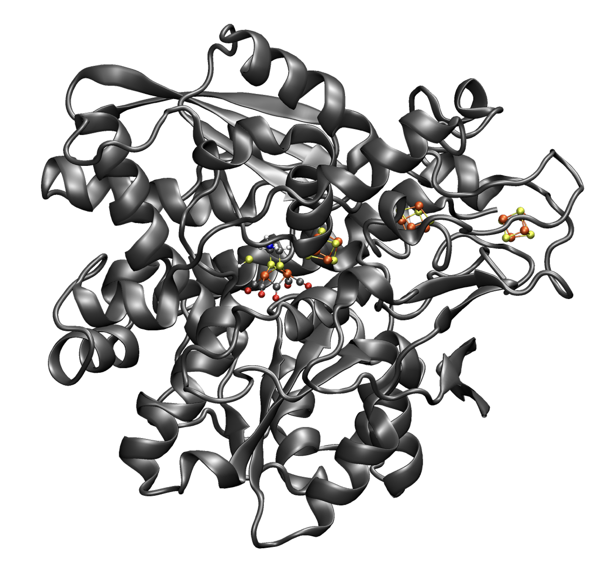
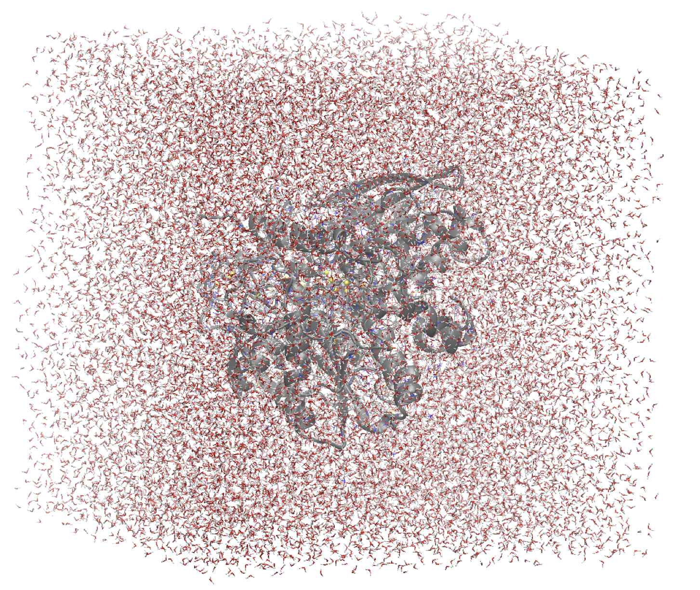

QM/MM on a protein
How to do QM/MM calculations of a protein in ASH This tutorial is in progress…
{kind=link}
1. Prepare a classical MM model of the system.
This step cam be the most time-consuming part of setting up a new QM/MM model of a protein. It involves finding a good starting structure (e.g. an X-ray structure), preparing the PDB-file, choose a forcefield, adding missing hydrogens, removing disorder-coordinates, removing unnecessary residues, adding missing residues, choosing protonation state of titratable residues, solvate the protein, add counterions, fix unphysical orientations in the structure, solvating the protein, minimizing the structure and finally running at the very least a simple MD simulation to check for correctness. This must all be done before starting the QM/MM calculations and this step should be done carefully as mistakes in this step are not easily corrected later on.
Some useful reading: https://www.mdy.univie.ac.at/people/boresch/sommerschule2019.pdf
There are many programs capable of setting up a classical model of the protein and most setups would be compatible with ASH.
ASH is currently capable of reading in (via OpenMM library):
{kind=link}
CHARMM forcefield files (PSF-file, top and prm files)
GROMACS files, using various forcefields
Amber files (PRMTOP)
OpenMM files (XML-file)
Option a. OpenMM using the CHARMM forcefield
The ASH-OpenMM interface can now set up a new biomolecular system starting from a raw PDB-file, adding hydrogens, solvating, minimize and running classical MD simulations. This has the convenience of using the same MM program that ASH uses for QM/MM. See OpenMM interface for details.
Example on lysozyme:
from ash import *
#Original raw PDB-file (no hydrogens, nosolvent)
#Download from https://www.rcsb.org/structure/1AKI
pdbfile="1aki.pdb"
#Defining residues with special user-wanted protonation states
#Example: residue_variants={0:'LYN', 17:'CYX', 18:'ASH', 19:'HIE' }
#residue 0: neutral LYS, residue 17: deprotonated CYS, residue 18: protonated ASP, residue 19: epsilon-protonated HIS.
#Other residues are determined based on the rules in the OpenMM modeller program
residue_variants={}
#Setting up new system, adding hydrogens, solvent, ions and defining forcefield, topology
forcefield, topology, ashfragment = OpenMM_Modeller(pdbfile=pdbfile, forcefield='CHARMM36', watermodel="tip3p", pH=7.0,
solvent_padding=10.0, ionicstrength=0.1, iontype="Na+", residue_variants=residue_variants)
#Creating new OpenMM object from forcefield, topology and and fragment
openmmobject =OpenMMTheory(platform='CPU', numcores=numcores, Modeller=True, forcefield=forcefield, topology=topology, periodic=True,
autoconstraints='HBonds', rigidwater=True)
#MM minimization for 1000 steps
OpenMM_Opt(fragment=ashfragment, openmmobject=openmmobject, maxiter=1000, tolerance=1)
#Classical MD simulation for 1000 ps
OpenMM_MD(fragment=ashfragment, openmmobject=openmmobject, timestep=0.001, simulation_time=1000, traj_frequency=1000, temperature=300,
integrator='LangevinMiddleIntegrator', coupling_frequency=1, trajectory_file_option='DCD')
Option b. GROMACS using the CHARMM forcefield
GROMACS is another popular open-source code MM code and comes with convenient tools for preparing a new protein model from scratch.
Once the system has been prepared using GROMACS, and an MD simulation run, one would extract the coordinates of a snapshot from the MD trajectory (e.g. after 5 ns simulation time). The coordinates should ideally be written out in Cartesian coordinates in Å and prepared as an XYZ-file. While the GROMACS files can be read in by ASH, it may also be more convenient to have GROMACS write out CHARMM forcefield files (if using CHARMM) or AMBER forcefield files (if using AMBER). Note that ParMed may help here: https://parmed.github.io/ParmEd/html/index.html
Another option is to use the PSF-create script: https://github.com/RagnarB83/chemshell-QMMM-protein-setup/blob/master/psfcreate.sh
2a. Read coordinates and forcefield into ASH
Here we will read in the coordinates and forcefield files from the classical system preparation. The coordinates can be read-in in multiple ways: e.g. a PDB-file (See Coordinates and fragment tools on reading/writing PDB-files), an XYZ-file (XMol format, file.xyz), from a previous ASH-file on disk (file.ygg), or a Chemshell fragment file (file.c). The forcefield can be read in using CHARMM files,Amber files, GROMACS files or OpenMM XML format.
CHARMM example:
from ash import *
# Read in forcefield files
forcefielddir="/home/bjornsson/ASH-vs-chemshell-protein/QM-MM/FeMoco-test1/forcefielddir/"
topfile=forcefielddir+"top_all36_prot.rtf"
parfile=forcefielddir+"par_all36_prot.prm"
psffile=forcefielddir+"new-XPLOR-psffile.psf"
#Read coordinates from either an XYZ-file, a PDB-file, or an ASH-file (.ygg)
frag = Fragment(xyzfile="system.xyz", conncalc=False)
#frag = Fragment(pdbfile="system.pdb", conncalc=False)
#frag = Fragment(fragfile="system.ygg", conncalc=False)
#frag = Fragment(chemshellfile="system.c", conncalc=False)
#Creating OpenMMobject using CHARMM forcefield files
openmmobject = OpenMMTheory(psffile=psffile, CHARMMfiles=True, charmmtopfile=topfile,
charmmprmfile=parfile)
#Run a simple energy+gradient job at the MM level to test whether everything is correct.
Singlepoint(theory=openmmobject, fragment=frag)
Amber example:
from ash import *
#Amber files
prmtopfile="ps2_ALL.prmtop"
inpcrdfile="PS2_ALL.inpcrd"
#Read coordinates from Amber INPCRD and PRMTOP FILES
elems,coords,boxdims=module_coords.read_ambercoordinates(prmtopfile=prmtopfile, inpcrdfile=inpcrdfile)
frag=Fragment(elems=elems,coords=coords, conncalc=False)
#Creating OpenMMobject using AMBER forcefield files
openmmobject = OpenMMTheory(Amberfiles=True, amberprmtopfile=prmtopfile, printlevel=1, periodic=True)
#Run a simple energy+gradient job at the MM level to test whether everything is correct.
Singlepoint(theory=openmmobject, fragment=frag)
OpenMM example:
If the system has been set up using OpenMM or using ASH OpenMM_Modeller then you would do something like this:
from ash import *
#Read coordinates from PDB-file. Using e.g. last snapshot from MD simulation.
frag=Fragment(pdbfile="final_MDfrag_laststep.pdb")
#Creating OpenMMobject using PDB topology and built-in CHARMM36 protein and TIP3P water XMLfiles.
#Also providing cofactor.xml file for nonstandard residues.
openmmobject = OpenMMTheory(pdbfile="final_MDfrag_laststep.pdb", xmlfiles=["charmm36.xml","charmm36/water.xml","cofactor.xml"],
periodic=True)
#Run a simple energy+gradient job at the MM level to test whether everything is correct.
Singlepoint(theory=openmmobject, fragment=frag)
The script above (e.g. called MMtest.py) can then be executed like this:
python-jl MMtest.py
It should finish in just a few seconds (or 1-2 minutes at most)þ
3. Create the QM/MM model and test it by running an energy calculation
Assuming step 2 worked well, the next step is to setup the QM/MM model. We reuse most of the script above and add information about the QM-theory, create a QM/MM object and then run a single-point energy job for testing purposes. The division of the system into a QM-region and an MM-region is handled by defining a list of atom-indices that are QM-atoms (create a list called qmatoms) and pass that list to the qmatoms keyword argument of the QMMMTheory class.
If the QM-MM boundary crosses a covalent bond (usually the case for proteins) then a linkatom (hydrogen)is automatically created. The linkatom coordinates are added to the QM-region coordinates when passed to the QM program.
Note: Example below uses CHARMM. To use Amber or OpenMM files, modify the creation of the OpenMMTheory object like before.
CHARMM example:
from ash import *
# Read in forcefield files
forcefielddir="/home/bjornsson/ASH-vs-chemshell-protein/QM-MM/FeMoco-test1/forcefielddir/"
topfile=forcefielddir+"top_all36_prot.rtf"
parfile=forcefielddir+"par_all36_prot.prm"
psffile=forcefielddir+"new-XPLOR-psffile.psf"
#Read coordinates from either an XYZ-file, a PDB-file, or an ASH-file (.ygg)
frag = Fragment(xyzfile="system.xyz", conncalc=False)
#Creating OpenMMobject using CHARMM forcefield files
openmmobject = OpenMMTheory(psffile=psffile, CHARMMfiles=True, charmmtopfile=topfile,
charmmprmfile=parfile)
#Forcefield files
forcefielddir="/home/bjornsson/ASH-vs-chemshell-protein/QM-MM/FeMoco-test1/forcefielddir/"
topfile=forcefielddir+"top_all36_prot.rtf"
parfile=forcefielddir+"par_all36_prot.prm"
psffile=forcefielddir+"new-XPLOR-psffile.psf"
#Define QM region
#IMPORTANT: Atom indices start at 0 in ASH.
# Define either as lists in script:
#qmatoms = [0, 5, 6, 7, 8]
#Or read in list from file called: qmatoms (atom indices separated by space)
qmatomlist = read_intlist_from_file("qmatoms")
#Define QM-theory. Here ORCA
orcadir="/opt/orca_500"
ORCAinpline="! TPSSh RIJCOSX D3BJ SARC/J ZORA-def2-SVP ZORA tightscf slowconv"
ORCAblocklines="""
%maxcore 2000
%scf
MaxIter 500
end
"""
#QM-region: Charge and multiplicity
charge=-5
mult=4
#Create ORCA QM object
orcaobject = ORCATheory(orcadir=orcadir, charge=charge,mult=mult, orcasimpleinput=ORCAinpline,
orcablocks=ORCAblocklines, numcores=8)
# Create QM/MM OBJECT
qmmmobject = QMMMTheory(qm_theory=orcaobject, mm_theory=openmmobject,
fragment=frag, embedding="Elstat", qmatoms=qmatomlist, printlevel=2)
# Single-point job to test QM/MM setup
Singlepoint(theory=qmmmobject, fragment=frag)
The script above (e.g. called QM_MMtest.py) can be run like this:
python-jl QM_MMtest.py
It will run both the MM part and the QMpart using the chosen theory. Choose a small QM-region for testing purposes if run directly in the shell.
4. Run a QM/MM geometry optimization
Assuming the QM/MM single-point energy test went well, then everything should be ready for running a QM/MM geometry optimization. A geometry optimization is the most common job to run for QM/MM modelling of proteins. Note that typically we only optimize a small part of the system in QM/MM (this active region is commonly ~1000 atoms). The list of active atoms is defined similarly to the qmatoms list (see above) but as the actatoms list is typically long it is usually more convenient to create this list via a script (e.g. actregiondefine.py).
actregiondefine.py:
from ash import *
#Forcefield files:
forcefielddir="/home/bjornsson/path-to-forcefield"
topfile=forcefielddir+"/top_all36_prot.rtf"
parfile=forcefielddir+"/par_all36_prot.prm"
psffile=forcefielddir+"/newxplor.psf"
#Fragment file
frag = Fragment(pdbfile="protein.pdb")
#Creating OpenMMobject
openmmobject = OpenMMTheory(psffile=psffile, CHARMMfiles=True,
charmmtopfile=topfile, charmmprmfile=parfile)
#Define active region based on radius (in Å) around origin-atom (atomindex).
#Whole residues will be included in selection. Note: ASH counts from 0.
actatoms = actregiondefine(mmtheory=openmmobject, fragment=frag, radius=11, originatom=25107)
Warning
While tempting to use the actregiondefine function within your regular ASH QM/MM geometry optimization job, this is typically not a good idea as the active region is then redefined in each job. It’s possible that the active region might slightly change in subsequent jobs due to e.g. water molecules being in or out out of the sphere-radius when the function is run. This results in an inconsistent energy surface. Instead: run the actregiondefine.py script only once to define the active-atoms list and use for all subsequent jobs.
Once the QM-region and Active Region has been defined one can then run a geometry optimization of the full system where only the active region is allowed to move. Instead of calling the Singlepoint function, one would call the geomeTRICOptimizer like below:
#Read in the active atoms list from file
actatomslist = read_intlist_from_file("active_atoms")
#Run QM/MM geometry optimization using geomeTRIC optimizer and HDLC coordinates
#Only active-region passed to optimizer
geomeTRICOptimizer(theory=qmmmobject, fragment=frag, ActiveRegion=True, actatoms=actatomslist, maxiter=500, coordsystem='hdlc')
If the optimization finishes successfully, the optimized coordinates will be written to disk as both XYZ-file, ASH fragfile etc. An optimization trajectory of both the full system and the frozen system.
See also
it’s possible to add a command at the end where a PDB-file is written out (See Coordinates and fragment tools on reading/writing PDB-files) for visualization purposes: write_pdbfile(frag, outputname=”OptimizedFragment.pdb”,openmmobject=openmmobject)
For completeness, the inputfile for a QM/MM geometry optimization should look something like this:
from ash import *
# Read in forcefield files
forcefielddir="/home/bjornsson/ASH-vs-chemshell-protein/QM-MM/FeMoco-test1/forcefielddir/"
topfile=forcefielddir+"top_all36_prot.rtf"
parfile=forcefielddir+"par_all36_prot.prm"
psffile=forcefielddir+"new-XPLOR-psffile.psf"
#Read coordinates from either an XYZ-file, a PDB-file, or an ASH-file (.ygg)
frag = Fragment(xyzfile="system.xyz", conncalc=False)
#Creating OpenMMobject using CHARMM forcefield files
openmmobject = OpenMMTheory(psffile=psffile, CHARMMfiles=True, charmmtopfile=topfile,
charmmprmfile=parfile)
#Forcefield files
forcefielddir="/home/bjornsson/ASH-vs-chemshell-protein/QM-MM/FeMoco-test1/forcefielddir/"
topfile=forcefielddir+"top_all36_prot.rtf"
parfile=forcefielddir+"par_all36_prot.prm"
psffile=forcefielddir+"new-XPLOR-psffile.psf"
#Define QM region
#IMPORTANT: Atom indices start at 0 in ASH.
# Define either as lists in script:
#qmatoms = [0, 5, 6, 7, 8]
#Or read in list from file called: qmatoms (atom indices separated by space)
qmatomlist = read_intlist_from_file("qmatoms")
#Define Active Region
#Read in the active atoms list from file
actatomslist = read_intlist_from_file("active_atoms")
#Define QM-theory. Here ORCA
orcadir="/opt/orca_current"
ORCAinpline="! TPSSh RIJCOSX D3BJ SARC/J ZORA-def2-SVP ZORA tightscf slowconv"
ORCAblocklines="""
%maxcore 2000
%scf
MaxIter 500
end
"""
#QM-region: Charge and multiplicity
charge=-5
mult=4
#Create ORCA QM object
orcaobject = ORCATheory(orcadir=orcadir, charge=charge,mult=mult, orcasimpleinput=ORCAinpline,
orcablocks=ORCAblocklines, numcores=8)
# Create QM/MM OBJECT
qmmmobject = QMMMTheory(qm_theory=orcaobject, mm_theory=openmmobject,
fragment=frag, embedding="Elstat", qmatoms=qmatomlist, printlevel=2)
#Run QM/MM geometry optimization using geomeTRIC optimizer and HDLC coordinates
#Only active-region passed to optimizer
geomeTRICOptimizer(theory=qmmmobject, fragment=frag, ActiveRegion=True, actatoms=actatomslist, maxiter=500, coordsystem='hdlc')
#Write a PDB-file of the final coordinates.
write_pdbfile(frag, outputname="OptimizedFragment.pdb",openmmobject=openmmobject)
5. Modifying the coordinates of the QM-region
To run a QM/MM optimization to find other minima, one would typically change the coordinates of the fragment file or XYZ-file outside ASH (e.g. using a visualization program).
See Coordinates and fragment tools for information on using fragedit.py and fragupdate.py
6. Adding/removing atoms of the system
If you need to add or remove atoms to your QM/MM system this is a bit more involved than modifying the coordinates. The reason is that both the coordinate and forcefield file needs to be updated and also: if you delete e.g. atom 4556 then all atom indices > 4556 change.
There are two options:
Go back to the original MM-system preparation and prepare a new MM model with the added/deleted atom(s). This is a safe option but inconvenient.
Modify the coordinate-file (XYZ-file, YGG-file, PDB-file), the forcefield file (e.g. PSF-file, topology file) and update atom-indices-files (e.g. active_atoms and qmatoms files).
- CHARMM files:
The PSF-file has to be regenerated and the topology and parameter-files may also need modifications/additions. PSFgen is the best option for creating a new PSF-file.
Delete atoms (CHARMM)
Both the coordinate-deletion and PSF-file update can be performed with an ASH script like this:
from ash import * #Path to dir containing PSFgen executable psfgendir="/home/bjornsson/QM-MM-Chemshell-scripts" #CHARMM Forcefield files topfile="top_all36_prot.rtf" psffile="newxplor.psf" #Reading coordinates into a fragment fragfile=Fragment(fragfile="Fragment-currentgeo.ygg") #What atoms to delete deletionlist=[18840] # Define qmatoms and actatoms lists qmatoms = read_intlist_from_file("qmatoms") actatoms = read_intlist_from_file("actatoms") #Delete atoms from system remove_atoms_from_system_CHARMM(atomindices=deletionlist, fragment=fragfile,psffile=psffile,topfile=topfile, psfgendir=psfgendir, qmatoms=qmatoms, actatoms=actatoms)
The script will delete the selected atoms (here 18840; note: ASH counts from zero) and create new fragmentfiles: newfragment.xyz and newfragment.ygg and create the new PSF file named: newsystem_XPLOR.psf . Also created is a PDB-file: new-system.pdb
Remember that when you delete atoms from a system atom indices will have changed. If you provide the qmatoms and actatoms list to the remove_atoms_from_system_CHARMM function as above then the lists will be update. Otherwise, remember to update the QM-region and Active-Region definitions yourself!
Note
If you are using 1-based atom indexing to manage your qmatoms and actatoms files, there is an option: offset_atom_indices=1, to remove_atoms_from_system_CHARMM that will preserve the 1-based indexing.
Add atoms to system (CHARMM)
Both the coordinates and the PSF-file needs to be updated. This can be performed with an ASH script like this:
from ash import * #Path to dir containing PSFgen executable psfgendir="/home/bjornsson/QM-MM-Chemshell-scripts" #CHARMM Forcefield files topfile="top_all36_prot.rtf" psffile="newxplor.psf" #Reading coordinates into a fragment fragfile=Fragment(fragfile="Fragment-currentgeo.ygg") # Define qmatoms and actatoms lists qmatoms = read_intlist_from_file("qmatoms") actatoms = read_intlist_from_file("actatoms") #Defining the added coordinates as a string addition_string=""" C 1.558526678 0.000000000 -0.800136464 O 2.110366050 -0.126832008 0.222773815 O 1.006687306 0.126832008 -1.823046743 """ #Name of resgroup to be added (this needs to be present in topfile!) resgroup='CO2' #Adding atoms add_atoms_to_system_CHARMM(fragment=fragfile, added_atoms_coordstring=addition_string, resgroup=resgroup, psffile=psffile, topfile=topfile, psfgendir=psfgendir, qmatoms=qmatoms, actatoms=actatoms)
The script will add the selected atom coordinates to the fragment (at the end) and create new fragmentfiles: newfragment.xyz and newfragment.ygg and add the chosen resgroup to a PSF file named: newsystem_XPLOR.psf . Also created is a PDB-file: new-system.pdb
Remember to add the new atom indices to QM-region and Active-Region definitions or provide the qmatoms and actatoms lists to the function!
Note
If you are using 1-based atom indexing to manage your qmatoms and actatoms files, there is an option: offset_atom_indices=1, to add_atoms_to_system_CHARMM that will preserve the 1-based indexing.
7. Other QM/MM jobtypes
One can also run a numerical frequency job using the same QM/MM ASH object:
#Numerical Frequencies. npoint=2 (two-point numerical differentiation). runmode='serial' means that each
#displacement (Energy+Gradient job on each geometry) is run sequentially. runmode='parallel' currently not possible
#for QM/MM jobs.
freqresult = NumFreq(fragment=frag, theory=qmmmobject, npoint=2, runmode='serial')
Or a nudged-elastic band job in order to find a minimum energy path and saddlepoint
fragA = Fragment(xyzfile="minA.xyz", conncalc=False)
fragB = Fragment(xyzfile="minB.xyz", conncalc=False)
#NEB-CI job. Final saddlepoint structure stored in new object "Saddlepoint"
Saddlepoint = interface_knarr.NEB(reactant=fragA, product=fragB, theory=qmmmobject, images=10, CI=True,
ActiveRegion=True, actatoms=qmatomslist, idpp_maxiter=800)
Saddlepoint.print_system(filename='saddlepoint.ygg')
8. EXAMPLE: Protein-setup, Opt, MD, QM/MM all in one script
The power of ASH, together with the flexible OpenMM library, is that in principle one could write a single script that performs an elaborate workflow that sets up a new protein from a crystal structure, solvates, minimizes, runs MD, before switching to a QM/MM geometry optimization. The example below (can also be found in examples directory) shows how this can be performed for a simple protein, lysozyme. This is of course an idealistic scenario and for a real system, there will be problems to deal with.
from ash import *
#Cores to use for OpenMM and QM/MM
numcores=4
#Original raw PDB-file (no hydrogens, nosolvent). Lysozyme example
pdbfile="1aki.pdb"
#Defining residues with special user-wanted protonation states
residue_variants={}
#Setting up new system, adding hydrogens, solvent, ions and defining forcefield, topology
forcefield, topology, ashfragment = OpenMM_Modeller(pdbfile=pdbfile, forcefield='CHARMM36', watermodel="tip3p", pH=7.0,
solvent_padding=10.0, ionicstrength=0.1, iontype="Na+", residue_variants=residue_variants)
#Creating new OpenMM object from forcefield, topology and and fragment
openmmobject =OpenMMTheory(platform='CPU', numcores=numcores, Modeller=True, forcefield=forcefield, topology=topology,
do_energy_decomposition=True, periodic=True,
autoconstraints='HBonds', rigidwater=True)
#MM minimization for 100 steps
OpenMM_Opt(fragment=ashfragment, openmmobject=openmmobject, maxiter=100, tolerance=1)
#Classical MD simulation for 10 ps
OpenMM_MD(fragment=ashfragment, openmmobject=openmmobject, timestep=0.001, simulation_time=10, traj_frequency=100, temperature=300,
integrator='LangevinMiddleIntegrator', coupling_frequency=1, trajectory_file_option='DCD')
#Setting up QM/MM model with QM-region: side-chain of ASP66
qmatomlist = [1013,1014,1015,1016,1017,1018]
#Define QM-theory. Here ORCA and r2SCAN-3c
ORCAinpline="! r2SCAN-3c tightscf"
ORCAblocklines="""
%maxcore 2000
%scf
MaxIter 500
end
"""
orcaobject = ORCATheory(orcadir="/Applications/orca_500", charge=-1,mult=1, orcasimpleinput=ORCAinpline,
orcablocks=ORCAblocklines, numcores=1)
# Create QM/MM OBJECT
qmmmobject = QMMMTheory(qm_theory=orcaobject, mm_theory=openmmobject,
fragment=ashfragment, embedding="Elstat", qmatoms=qmatomlist, printlevel=2)
# QM/MM geometry optimization
geomeTRICOptimizer(theory=qmmmobject, fragment=ashfragment, ActiveRegion=True, actatoms=qmatomlist, maxiter=500)